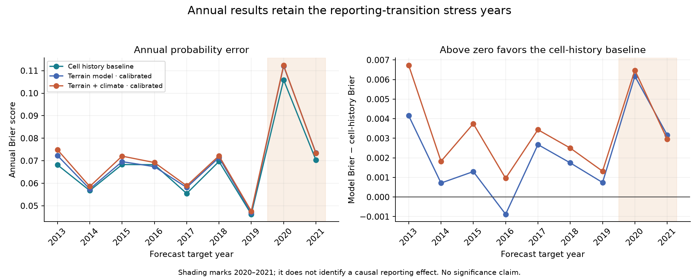

Forecasting case study Retrospective development study
When history beat
the forecasting model.
Could terrain and antecedent climate improve next-year wildfire occurrence probabilities? Across nine retrospective forecast years, a smoothed cell-history baseline outperformed the fixed logistic models.
Utah · Salt Lake, Utah & Washington counties
997 nominal 4 km cells · Reviewed history 2001–2021
The baseline earned its place.
9 of 9 yearsCell history had lower Brier error
than the primary model.
The simpler cell-history baseline produced better probability estimates than the terrain-plus-climate model in this experiment. Cell history uses a cell’s earlier recorded wildfire occurrence, smoothed toward its county’s rate. The model uses terrain, cell area and earlier climate measurements.
Brier score measures how close predicted probabilities are to what happened: 1 if a cell recorded at least one wildfire discovery that year, and 0 otherwise. It averages the squared differences; lower scores mean better probability estimates. Each year’s score receives equal weight in the nine-year average.
The model’s mean annual Brier error was 4.91% higher than the baseline’s. This is a relative increase in probability error, not a 4.91-percentage-point drop in classification accuracy.
Equal weight for each forecast year, 2013–2021. Brier score measures squared probability error; 4.91% is a relative error increase, not a percentage-point loss of classification accuracy.
The recommendation rule was set before examining the results: recommend the model only if it beats the strongest historical baseline on Brier score without increasing log loss. Log loss is another measure of probability quality that penalizes confident mistakes particularly strongly. The terrain-plus-climate model had worse scores on both measures, so it did not qualify.
Compare all eight method variants
| Method | Brier ↓ | Log loss ↓ |
|---|---|---|
| Cell history baseline | 0.06768 | 0.25239 |
| Terrain model, calibrated | 0.06988 | 0.25883 |
| Terrain model, raw | 0.07087 | 0.26294 |
| Terrain + climate, calibrated | 0.07101 | 0.26219 |
| Recent-history baseline | 0.07125 | 0.27282 |
| Pooled-history baseline | 0.07186 | 0.27620 |
| County-history baseline | 0.07196 | 0.27523 |
| Terrain + climate, raw | 0.07224 | 0.26659 |
Decision: retain cell history as the retrospective reference. No tuning was performed after inspecting evaluation results.
A forecast only gets the past.
The target was at least one recorded wildfire discovery in a cell during a UTC calendar year—not incident counts, burned area or property loss. Forecasts covered the same cells through time.
Four historical baselines were compared with fixed L2 logistic models: terrain and area alone, then terrain plus six antecedent climate features. Raw and intercept-calibrated probabilities were retained.
- 2001–2017TrainFit model, imputation
and scaling - 2018–2019CalibrateFit the probability offset;
baselines use history through 2019 - December 2020Freeze & issueDec 1 input cutoff
Dec 15 proposed issue - 2021EvaluateSave predictions first,
then join outcomes
Climate windows ended in September before each target year. A 60-day release delay was assumed, not historically verified. Labels from the year immediately before the target were excluded from fitting.
The common 2013–2021 evaluation cohort excludes 230 unknown labels and 155 flagged zeros. Whole years stay together; preprocessing is fitted only on earlier base-training rows. No hyperparameter search was performed.
Complexity did not buy better forecasts.
Cell history also had lower mean annual Brier error in each county. Adding antecedent climate to the fixed logistic model did not improve average Brier performance over terrain alone. This finding is specific to these features, models and studied years; it does not imply climate is unimportant to wildfire.
Inspect the annual pattern and county scores

| County | Cell history | Terrain, calibrated | Terrain + climate, calibrated |
|---|---|---|---|
| Salt Lake | 0.04729 | 0.04916 | 0.04957 |
| Utah | 0.05686 | 0.05949 | 0.06029 |
| Washington | 0.08532 | 0.08732 | 0.08900 |
The useful outcome is a defensible model-selection decision: establish a strong baseline, test the added predictors and retain the simpler reference when it wins. The earlier published XGBoost study used a different evaluation design; this experiment does not replace that frozen recommendation.
A retrospective experiment,
not an operational forecast.
- Historical availability is unverified. Contemporary terrain, reconstructed climate and later label review do not establish what was available at each issue date.
- Recorded occurrence depends on reporting. The source transition around 2020 and missing labels complicate interpretation. Even the winning baseline overpredicts on average.
- These are studied development years. There is no independent final evaluation or demonstrated transfer to new counties. Cells have unequal areas and include non-WUI land.
All work stays within reviewed 2001–2021 target years. Observations for 2022–2025 remain untouched.
Follow the result.
Saved experiment outputs, copied without refitting.
Model replay and source-preservation checks passed.